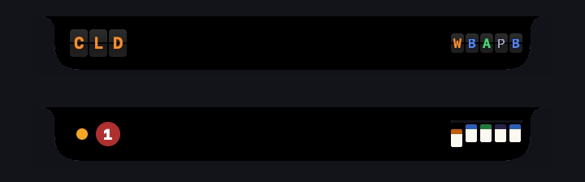

A coding agent is patient in the worst way. It will sit on Allow this command? for as long as it takes, without a sound, in a tab three windows down, while I admire how productive I'm being in another one.
The agents were never the slow part. I was, and specifically the part of me that had to notice. Checking tabs is polling, and people are bad at polling: we do it constantly and get nothing else done, or we forget and find the question after lunch.
So I gave the agents an interrupt line and put it on the one strip of screen nobody was using. The notch already costs every MacBook a rectangle of pixels. Topside moves in there dressed as a departure board. The left side shows the newest session's agent as a flight code, CLD for Claude Code or CDX for Codex. The right side has a flap per session: B is boarding, W is waiting on you, A has arrived. Hover and the whole board comes down; click the pill instead and it stays while the screen dims.


It reads Claude Code, Codex CLI, pi, omp and OpenCode. When one of them wants to run a command or touch a file, the board drops out of the notch with WAITING clacking into place and the diff under it, and ^Y or ^N settles it. The tab stays wherever it was.
- ^Yallow
- ^Ndeny
- ^Aalways allow (Claude Code only)
- ^Jjump to its terminal
- escclose
For the times you do want the tab, ^J or a click takes you there. Topside finds it the way you'd debug it: up the session's process tree until it hits a terminal, then the pane, in WezTerm, Orca, iTerm2, Terminal.app and tmux. Ghostty gets the window and an apology, since it has no way to pick a tab from outside yet.
Styles
Both styles came from the Arch version. If a departure board feels too calm, switch to Kitchen, which commits harder. The notch is a ticket printer, a request feeds out as an order ticket, and you answer it with a rubber stamp. The stamp lands, the ticket tears off, and only then does the answer go out, which is more ceremony than ^Y needs and exactly as much as it deserves. The list is the rail over the pass: five tickets on magnets, the rest on a spike, and your plan limits chalked on the menu board.

Both styles come with sound, if you want sound, which by default you don't. The board chimes like a terminal at the airport and its flaps clack; the kitchen's printer chatters and the stamp lands with a thump. Nothing plays until you click the speaker next to the gear. The sounds are generated, a few lines of arithmetic each, so the app still ships without a single audio file.
How it works
The design is boring on purpose. Nothing runs beside the app and nothing leaves the machine. Each agent's hook starts the app's own binary in hook mode, which writes one JSON message to a Unix socket and exits. Sessions live in SQLite under ~/Library/Application Support/Topside.
Installing the hooks adds eight entries to ~/.claude/settings.json, leaves yours alone, and backs the file up first, because I've had a tool helpfully rewrite my config too. Quit Topside and the agents go back to asking in the terminal, as if it had never been there.
Install
curl -fsSL https://topside.ducban.com/install.sh | shmacOS 14 or later, Apple silicon. No sudo.
You're right to squint at curl | sh. The reason is dull: I have no Developer ID, so the app is ad-hoc signed, and a zip that arrives through a browser gets quarantined and refused by Gatekeeper. curl doesn't set that flag. The script is under 90 lines, so read it first. It checks the download against its SHA-256, verifies the signature, and swaps the new app in only once the copy is whole.
Then hover the island, click the gear, and switch your agents on under Integrations. To remove it, switch them off there, quit, and delete /Applications/Topside.app.
Ban
P.S. If the session's terminal is already in front when a turn ends, Topside says nothing. You were looking at it.
What's new up to 0.4.5
- Board is the default; the first look, cards and colored dots, is retired.
- The pill and Settings dress in your style, so there's no theme to pick.
- "Hide" asks first, and every list opens newest first.
Also on Arch Linux 0.2.0
The same island in your Quickshell bar: on SekaiPop, DankMaterialShell or a pill of its own.
sudo npm install -g topside-arch